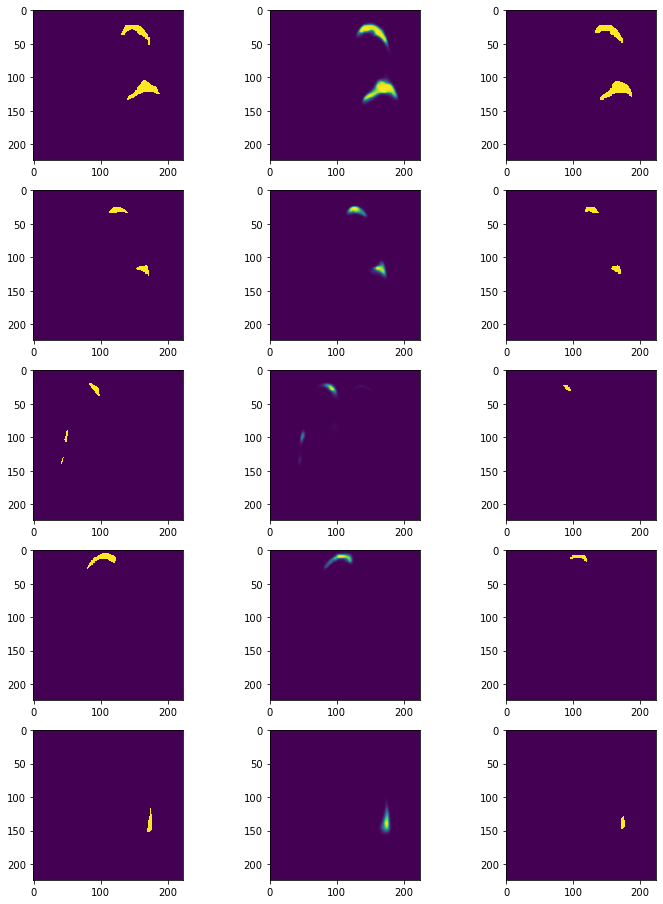

from fastai.vision.all import *
from fastai.medical.imaging import *
import torchvision
import torchvision.transforms as tPneumothorax demo
pneumothorax_source = untar_data(URLs.SIIM_SMALL)items = get_dicom_files(pneumothorax_source/f"train/")df = pd.read_csv(pneumothorax_source/f"labels.csv")
df.head()| file | label | |
|---|---|---|
| 0 | train/No Pneumothorax/000000.dcm | No Pneumothorax |
| 1 | train/Pneumothorax/000001.dcm | Pneumothorax |
| 2 | train/No Pneumothorax/000002.dcm | No Pneumothorax |
| 3 | train/Pneumothorax/000003.dcm | Pneumothorax |
| 4 | train/Pneumothorax/000004.dcm | Pneumothorax |
df_pneumo = df[df['label']=='Pneumothorax']pneumothorax = DataBlock(blocks=(ImageBlock(cls=PILDicom), MaskBlock(codes=['bg','pneumo'])),
get_x=lambda x:pneumothorax_source/f"{x[0]}",
get_y=lambda x:'example/siim/'+Path(x[0]).stem+'.png',
batch_tfms=aug_transforms(do_flip=False,p_affine=0,p_lighting=0,size=224))
dls = pneumothorax.dataloaders(df_pneumo.values, num_workers=0, bs=16)dls.show_batch(max_n=16, vmin=0)
# just for testing - you can skip this when running interactively
learn = unet_learner(dls, resnet34)learn.fine_tune(1)| epoch | train_loss | valid_loss | time |
|---|---|---|---|
| 0 | 1.382017 | 0.309487 | 01:04 |
| epoch | train_loss | valid_loss | time |
|---|---|---|---|
| 0 | 0.167802 | 0.111701 | 00:51 |
# this is skipped when testing, instead a single epoch is done (not sufficient for overfitting)
learn = unet_learner(dls, resnet34)
learn.fine_tune(8)| epoch | train_loss | valid_loss | time |
|---|---|---|---|
| 0 | 2.200016 | 0.416453 | 01:05 |
| epoch | train_loss | valid_loss | time |
|---|---|---|---|
| 0 | 0.195540 | 0.105748 | 00:51 |
| 1 | 0.148728 | 0.141623 | 00:51 |
| 2 | 0.126741 | 0.176495 | 00:54 |
| 3 | 0.116757 | 0.106115 | 00:57 |
| 4 | 0.106740 | 0.093054 | 02:16 |
| 5 | 0.098731 | 0.140762 | 01:49 |
| 6 | 0.092059 | 0.120493 | 02:27 |
| 7 | 0.086470 | 0.116142 | 01:48 |
learn.show_results(ds_idx=0,max_n=9,vmin=0)preds = learn.get_preds(ds_idx=0)plt.imshow(preds[1][2])<matplotlib.image.AxesImage>preds[0].argmax(dim=1).sum()
#plt.imshow(preds[0].argmax(dim=1)[0])TensorBase(0)learn.fine_tune(8)| epoch | train_loss | valid_loss | time |
|---|---|---|---|
| 0 | 0.061920 | 2.473048 | 01:03 |
| epoch | train_loss | valid_loss | time |
|---|---|---|---|
| 0 | 0.314660 | 0.080977 | 01:54 |
| 1 | 0.208264 | 0.088037 | 00:55 |
| 2 | 0.160613 | 0.078349 | 00:54 |
| 3 | 0.134872 | 0.086172 | 00:52 |
| 4 | 0.113790 | 0.082046 | 00:52 |
| 5 | 0.100933 | 0.077185 | 00:53 |
| 6 | 0.090635 | 0.089535 | 01:10 |
| 7 | 0.083492 | 0.089540 | 01:10 |
learn.recorder.plot_loss()preds = learn.get_preds(ds_idx=0)
preds[0].argmax(dim=1).sum()TensorBase(0)fig, axs = plt.subplots(5,2,figsize=(8,16))
for i in range(5):
axs[i,0].imshow(preds[1][i])
axs[i,1].imshow(preds[0][i][1])
print(preds[0][i][1].max())TensorBase(0.3102)
TensorBase(0.3205)
TensorBase(0.3076)
TensorBase(0.2694)
TensorBase(0.0728)learn.fit_one_cycle(8)| epoch | train_loss | valid_loss | time |
|---|---|---|---|
| 0 | 0.043738 | 0.085497 | 01:06 |
| 1 | 0.041399 | 0.126955 | 00:53 |
| 2 | 0.039557 | 0.166106 | 00:52 |
| 3 | 0.038748 | 0.160928 | 00:55 |
| 4 | 0.036368 | 0.123756 | 00:52 |
| 5 | 0.034367 | 0.111612 | 00:52 |
| 6 | 0.032606 | 0.130679 | 00:52 |
| 7 | 0.030831 | 0.122198 | 00:53 |
preds = learn.get_preds(ds_idx=0)
preds[0].argmax(dim=1).sum()TensorBase(14126)learn.fit_one_cycle(20)| epoch | train_loss | valid_loss | time |
|---|---|---|---|
| 0 | 0.023082 | 0.114249 | 00:56 |
| 1 | 0.022736 | 0.110707 | 00:53 |
| 2 | 0.021745 | 0.209588 | 00:52 |
| 3 | 0.022693 | 0.105819 | 01:18 |
| 4 | 0.024324 | 0.151829 | 00:49 |
| 5 | 0.024436 | 0.093544 | 00:49 |
| 6 | 0.024203 | 0.123490 | 00:48 |
| 7 | 0.023524 | 0.166477 | 00:50 |
| 8 | 0.022349 | 0.262088 | 00:55 |
| 9 | 0.021310 | 0.254958 | 01:41 |
| 10 | 0.020904 | 0.199529 | 02:09 |
| 11 | 0.020301 | 0.199600 | 00:58 |
| 12 | 0.019917 | 0.186603 | 01:07 |
| 13 | 0.019124 | 0.135860 | 00:52 |
| 14 | 0.018472 | 0.152205 | 00:49 |
| 15 | 0.017754 | 0.178598 | 00:52 |
| 16 | 0.017116 | 0.187399 | 00:56 |
| 17 | 0.016518 | 0.185505 | 00:56 |
| 18 | 0.015890 | 0.184788 | 00:57 |
| 19 | 0.015337 | 0.181746 | 00:57 |
preds = learn.get_preds(ds_idx=0)
preds[0].argmax(dim=1).sum()TensorBase(41177)fig, axs = plt.subplots(5,3,figsize=(12,16))
for i in range(5):
axs[i,0].imshow(preds[1][i], interpolation="nearest")
axs[i,1].imshow(preds[0][i][1])
axs[i,2].imshow(preds[0].argmax(dim=1)[i], interpolation="nearest")
learn.save('pneumothorx')Path('models/pneumothorx.pth')We managed to overfit
learn.load('pneumothorx')<fastai.learner.Learner>from misas.core import *
from fastai.vision.all import * #open_mask, Image, ImageSegment
import pydicomdef read_dcm(file):
ds = pydicom.dcmread(file)
img = Tensor(ds.pixel_array.astype(np.int16))
img = img/img.max()
transform = t.ToPILImage()
img = transform (torch.stack([img, img, img]))
return imglearn.predict(learn.dls.train_ds.items[1])[0].show(vmin=0)<AxesSubplot:>fname = df_pneumo.iloc[3]['file']
img = lambda: read_dcm(pneumothorax_source/fname)
trueMask = lambda: Image.open('example/siim/'+Path(fname).stem+'.png') #open_mask('example/siim/'+Path(fname).stem+'.png')dcm = img()dcm
#to_image(dcm.data)pred = learn.predict(PILDicom(dcm))[1]
plt.imshow(pred)<matplotlib.image.AxesImage>class Fastai2_wrapper:
def __init__(self, model):
self.model = model
self.model.cbs = L([])
def imageToPILDicom(self, image):
return PILDicom(image)
def prepareSize(self, imageOrMask):
return imageOrMask.resize((224,224))
def predict(self, image):
image = self.imageToPILDicom(image)
pred = self.model.predict(image)[0]#(in_image)
return Image.fromarray(np.array(pred).astype(np.uint8))model = Fastai2_wrapper(learn)plt.imshow(model.predict(img()))<matplotlib.image.AxesImage>
plot_series(get_rotation_series(img(), model))result = eval_rotation_series(img(), trueMask(), model, start=-180, end=180, components=['bg','pneumo'])plt.plot(result['deg'],result['pneumo'])